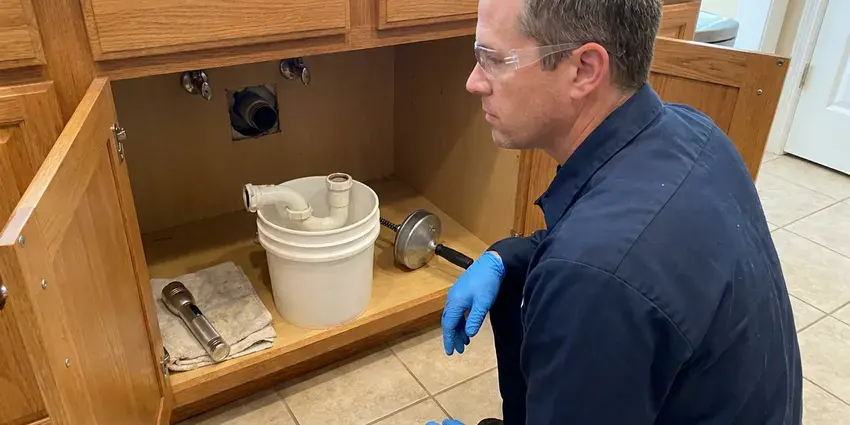

Gas Leak Repair in Kapaa, HI
Never take chances with gas leaks in Kapaa, HI. HKL Plumbing offers emergency gas leak detection and repair services for peace of mind.
- Red Tag Repairs Handled
- Certified Gas Technicians
- Pressure Testing to Code
- Local Kapaa Experts

Emergency Gas Leak Repair Services in Kapaa, HI.
Act fast if you suspect a gas leak, contact HKL Plumbing right away for professional help.
Gas Leak Repair in Kapaa, HI for Interior, Appliance and Yard Gas Lines
At HKL Plumbing, we understand the urgency of a gas leak. Our licensed technicians provide swift, accurate detection and durable gas leak repair for homes and businesses in Kapaa, HI.
Our expertise includes:
- Safe repair or replacement of damaged gas lines.
- Electronic gas detection and gauge pressure testing of every branch
- Installation of new gas lines for appliances.

Additional Plumbing Repair Services in Kapaa, HI
We offer expert plumbing repair services across Kapaa, HI to stop leaks, clear blockages, and keep every fixture working the way it should.


Customers
Why Choose HKL Plumbing for Gas Leak Repair in Kapaa, HI?
Finding a slow gas leak takes patience and the right instruments. We test methodically so the leak is fixed and the whole system passes inspection.
- Code Compliant, All repairs meet or exceed local Kapaa and Hawaii state plumbing and gas safety regulations.
- Rapid Response, We offer fast response times to address gas leaks promptly, minimizing risk to your property.
- Advanced Tools, We use the latest gas detection technology to accurately locate and diagnose leaks.
Citywide Coverage
We are fully committed to the safety of the entire Kapaa community. Our gas leak repair services extend throughout all districts, ensuring rapid response across the metro area.
Experienced Team
Our plumbing team has deep experience with the gas line systems common in Hawaii homes. They regularly undergo training to stay current with the latest gas safety standards and repair techniques.
Safety-First Approach
Safety is our absolute top priority when performing any gas leak repair. We adhere to all Hawaii state regulations and local Kapaa codes, so every repair is not only effective but also completely safe for your household.
Trusted Certified Kapaa Plumbing Services Professionals
At HKL Plumbing, we take pride in providing licensed, certified plumbing services throughout Kapaa, HI. Backed by leading industry credentials, our experienced plumbers combine technical skill with genuine customer care. Whether it is repair, installation, or maintenance, we follow strict safety and quality standards to deliver long-lasting results you can trust.
Call Us Now PHCC Plumbing Contractor Recognition
PHCC Plumbing Contractor Recognition Better Business Bureau (BBB) Accreditation
Better Business Bureau (BBB) Accreditation Angi Certified Pro
Angi Certified Pro ISO 9001 Quality Management Certification
ISO 9001 Quality Management CertificationTrusted Gas Leak Repair Services in Kapaa, HI
Corrugated Stainless Steel Tubing Repair in Kapaa, HI
Many homes in Kapaa, HI use corrugated stainless steel tubing, or CSST, for gas lines due to its flexibility and ease of installation. While efficient, CSST can be vulnerable to damage from lightning strikes or improper installation. Our plumbers are trained in the specific repair and bonding requirements for CSST, so any leaks in this type of piping are addressed safely and according to manufacturer and code requirements.

Permitting and Code Compliance in Kapaa, HI
Any significant gas line repair or replacement in Kapaa, HI typically requires permits and inspections from local authorities. HKL Plumbing handles all necessary paperwork and makes sure every aspect of the repair meets the requirements of Hawaii plumbing and gas codes. This commitment to compliance not only protects safety but also helps you avoid issues during future home inspections or sales.
Gas Meter to House Line Repair in Kapaa, HI
The gas line running from your utility's meter to your home's main shut-off valve is a frequent area for leaks. This line can be exposed to environmental factors that speed up wear. HKL Plumbing focuses on repairing or replacing these critical segments. We perform proper pressure testing and follow all local Kapaa, HI regulations for gas line integrity, providing a secure connection for your home's gas supply.
Propane Gas Leak Repair in Kapaa, HI
Rural homes often run on propane from an above-ground or buried tank. Leaks may occur at regulators, tank connections or underground lines. Because propane is heavier than air, leaks can pool in low areas. We test the full system, repair the leak and verify correct regulator pressures.
Emergency Gas Leak Services in Kapaa
Gas leaks are emergencies that require urgent attention. HKL Plumbing offers rapid response for urgent gas leak situations across Kapaa. If you smell sulfur or rotten eggs, hear a hissing sound or see visible damage to a gas line, leave the building and call us after contacting your gas utility. Our emergency team is equipped to isolate the leak, make the system safe and then perform permanent repairs.
Commercial Gas Leak Services in Kapaa
Businesses in Kapaa also depend on safe gas systems for heating, cooking and industrial processes. HKL Plumbing provides full gas leak detection and repair for commercial properties, understanding the complexities of larger gas systems and the need to limit business interruption. We work quickly and efficiently to resolve commercial gas leaks so your business operations can resume safely and without delay, adhering to all commercial codes.
Interior Gas Pipe Repair in Kapaa, HI
Leaks inside walls, attics or garages usually occur at threaded fittings or unions. We tighten, reseal or replace fittings and damaged pipe with approved materials. Where access is difficult, rerouting with CSST can avoid extensive wall damage. All work is pressure tested before the gas is turned on.

Underground Gas Line Repair in Kapaa
Many Hawaii homes have underground gas lines running from the meter to the house or outdoor appliances. These lines can be prone to leaks due to shifting soil, root intrusion or corrosion. Our underground gas line repair process involves careful excavation, accurate leak location and durable pipe replacement using approved materials like polyethylene or coated steel. We ensure all repairs comply with Kapaa trenching and backfilling codes.
Gas Leak Repair Near Me in Kapaa, HI
When you search for 'gas leak repair near me' in Kapaa, HI, you want a company that responds fast and safely. HKL Plumbing is your local solution, offering prompt, expert service right to your doorstep. We pride ourselves on being a dependable partner for all gas plumbing emergencies in the area.
When you search for 'gas leak repair near me' in Kapaa, HI, you want a reliable, local expert who can respond quickly. HKL Plumbing is your community's reliable choice, with technicians based across the area to provide fast service. We understand the plumbing and gas infrastructure of Kapaa.
HKL Plumbing at a Glance
- Licensed and insured plumbers serving Kapaa, HI
- 24/7 emergency service with same-day scheduling
- Upfront, flat-rate pricing before work begins
- 4.8-star rated by 529+ Hawaii customers
Kapaa Map
Kapaa Information
- Population
- 11,652
- Area codes
- Local
- Service area
- Kapaa and communities within 40 miles
- Nearby
- Waianae, Maili, Nanakuli, Schofield Barracks
Many homes in Kapaa, HI run gas to pool heaters, fire pits and outdoor kitchens through buried lines exposed to soil and moisture, so timely gas leak repair protects families and property.
Expert Services
Trust our professionals for reliable HKL Plumbing solutions in Kapaa, HI.
Our Specialized Plumbing Services in Kapaa, HI
At HKL Plumbing, we provide a complete range of plumbing services across Kapaa, HI. From leak detection to full system installations, our team ensures fast, precise, and affordable service for both residential and commercial properties. Explore our core services below:


How Our Gas Leak Repair Process Works in Kapaa, HI
We follow a clear, systematic approach to gas leak repair, so every step is handled with expert care and strict adherence to safety protocols in Kapaa, HI.
Request a Quote
Contact (808) 649-6718 immediately if you suspect a gas leak. Our dispatch team will gather essential information and prioritize your emergency call for rapid response.
On-Site Assessment
A certified technician arrives quickly to perform a thorough safety assessment, using detectors to pinpoint the exact location and severity of the gas leak.
Safe Repair Execution
Once the leak is identified, we will isolate the gas supply, make the necessary repairs or replacements using quality materials and make sure all work meets code requirements.
Frequently Asked Questions About Gas Leak Repair in Kapaa
The cost of gas leak repair in Kapaa, HI can vary significantly depending on the leak's location, severity and the extent of pipe damage. Minor repairs, like tightening a connection, might range from $150 to $400, while more complex issues involving pipe replacement could be between $500 and $2,500 or more. We provide a clear estimate after a thorough inspection.
Leave the home right away, do not use light switches or open flames, and call your gas utility or 911 from outside. After the area is made safe, call us for the repair.
No, you should never attempt to fix a gas leak yourself. Gas line repairs require specialized training, tools and strict adherence to safety codes. Improper repairs can be extremely dangerous and lead to severe consequences. Always call a licensed professional like HKL Plumbing.
We use high-quality, code-compliant gas line components from reputable manufacturers like TracPipe, Gastite and NIBCO. Our focus is on durable, reliable parts that protect the long-term safety and integrity of your gas system.
HKL Plumbing prioritizes gas leak emergencies and aims for the fastest possible response times in Kapaa. While exact times vary based on traffic and call volume, we dispatch technicians immediately upon receiving an emergency call so your safety is addressed as quickly as possible.
We repair all types of gas lines found in Hawaii homes and businesses, including black iron pipe, galvanized steel, copper and modern corrugated stainless steel tubing. Our technicians are experienced with many piping materials and connection methods.
A carbon monoxide detector does not detect natural gas leaks. Natural gas has no smell of its own, so an additive gives it a rotten egg odor, while carbon monoxide is an odorless, colorless gas that results from incomplete combustion. While a carbon monoxide detector is crucial for safety, it will not alert you to a gas leak. You need to rely on your sense of smell or a dedicated gas leak detector.
Yes, a gas leak is always an emergency. Natural gas is highly flammable and can lead to fires, explosions or carbon monoxide poisoning. If you suspect a gas leak, evacuate everyone out of the building, call 911 from a safe distance and then contact HKL Plumbing for immediate repair.
What People Are Saying About Our Plumbing Experts?

Laura S.
I scheduled a water heater replacement, and the team made the process smooth and affordable. The new unit works perfectly, and they cleaned up after completing the job.
Water Heater Replacement · Kapaa, HI
Daniel K.
A pipe burst at 11 pm and they actually answered. The plumber showed up within the hour, shut everything down, and had us back to normal the next morning. Could not ask for more.
Emergency Plumbing · Schofield Barracks, HI
Robert G.
The trenchless sewer replacement saved our front yard. They walked us through the camera inspection footage first so we knew exactly what we were paying for.
Sewer Line Replacement · Nanakuli, HISofia M.
Two new toilets installed in one visit, no mess left behind, and the tech even adjusted a faucet he noticed was dripping. Fair pricing and really friendly.
Toilet Installation · Nanakuli, HI
Emily R.
I called HKL Plumbing for plumbing repair, and the technician was fast, polite, and thorough. They explained the problem clearly and fixed it the same day. I will definitely hire them again. Highly recommended!
Plumbing Repair · Maili, HI
Patricia H.
We had a slab leak that two other companies could not find. HKL Plumbing located it in under an hour, explained our options, and the price matched the quote to the dollar.
Slab Leak Repair · Nanakuli, HI